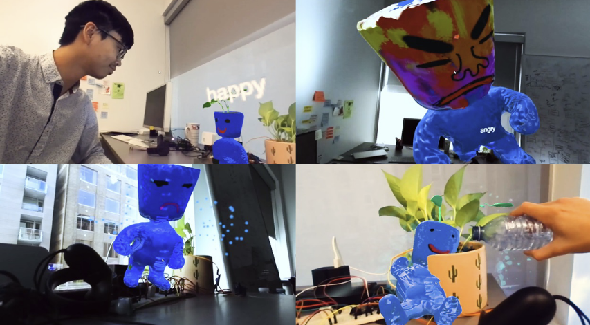
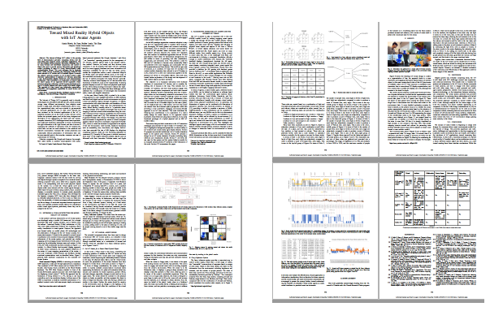

Toward Mixed Reality Hybrid Objects with IoT Avatar Agents

|
Abstract: Information was gathered for a simple plant IoT-Avatar scenario,modifying the avatar behaviors through changes in the environment states(lighting, moisture, presence of people).
|
Abstract: The internet-of-things (IoT) refers to the growing field of interconnected pervasive computing devices and the networking that supports smart, embedded applications. The IoT has multiple human-computer interaction challenges due to its many formats and interlinked components, and central to these is the need to provide sensory information and situational context pertaining to users in a more human-friendly, easily understandable format. This work addresses this by applying mixed reality toward expressing the underlying behaviors and states internal to IoT devices and IoT-enabled objects. It extends the authors' previous research on IoT Avatars (mixed reality character representations of physical IoT devices), presenting a new head-mounted display framework and interconnection architecture. This contributes i) an exploration of mixed reality for smart spaces, ii) an approach toward expressive avatar behaviors using fuzzy inference, and iii) an early functional prototype of a hybrid physical and mixed reality IoT-enabled object. This approach is a step toward new information presentation, interaction, and engagement capabilities for smart devices and environments.
Paper
|  |
Morris, Guan, Lessio, Shao.
Toward Mixed Reality Hybrid Objectswith IoT Avatar Agents.
IEEE SMC 2020.
[Paper]
[Bibtex]
|
Paper Video
Acknowledgements
This work gratefully acknowledges funding from the Tri-council of Canada under the Canada Research Chairs program.
|